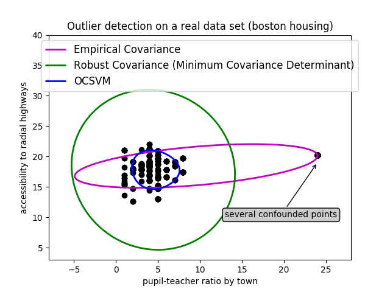
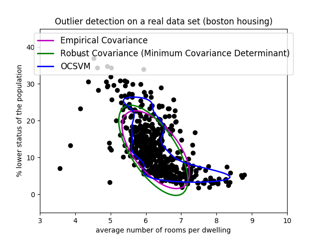

Note
Click here to download the full example code or run this example in your browser via Binder
1.2.1. Outlier detection on a real data set¶
This example illustrates the need for robust covariance estimation on a real data set. It is useful both for outlier detection and for a better understanding of the data structure.
We selected two sets of two variables from the Boston housing data set as an illustration of what kind of analysis can be done with several outlier detection tools. For the purpose of visualization, we are working with two-dimensional examples, but one should be aware that things are not so trivial in high-dimension, as it will be pointed out.
In both examples below, the main result is that the empirical covariance estimate, as a non-robust one, is highly influenced by the heterogeneous structure of the observations. Although the robust covariance estimate is able to focus on the main mode of the data distribution, it sticks to the assumption that the data should be Gaussian distributed, yielding some biased estimation of the data structure, but yet accurate to some extent. The One-Class SVM does not assume any parametric form of the data distribution and can therefore model the complex shape of the data much better.
1.2.1.1. First example¶
The first example illustrates how robust covariance estimation can help concentrating on a relevant cluster when another one exists. Here, many observations are confounded into one and break down the empirical covariance estimation. Of course, some screening tools would have pointed out the presence of two clusters (Support Vector Machines, Gaussian Mixture Models, univariate outlier detection, …). But had it been a high-dimensional example, none of these could be applied that easily.
1.2.1.2. Second example¶
The second example shows the ability of the Minimum Covariance Determinant robust estimator of covariance to concentrate on the main mode of the data distribution: the location seems to be well estimated, although the covariance is hard to estimate due to the banana-shaped distribution. Anyway, we can get rid of some outlying observations. The One-Class SVM is able to capture the real data structure, but the difficulty is to adjust its kernel bandwidth parameter so as to obtain a good compromise between the shape of the data scatter matrix and the risk of over-fitting the data.
- 
- 
print(__doc__)
# Author: Virgile Fritsch <virgile.fritsch@inria.fr>
# License: BSD 3 clause
import numpy as np
from sklearn.covariance import EllipticEnvelope
from sklearn.svm import OneClassSVM
import matplotlib.pyplot as plt
import matplotlib.font_manager
from sklearn.datasets import load_boston
# Get data
X1 = load_boston()['data'][:, [8, 10]] # two clusters
X2 = load_boston()['data'][:, [5, 12]] # "banana"-shaped
# Define "classifiers" to be used
classifiers = {
"Empirical Covariance": EllipticEnvelope(support_fraction=1.,
contamination=0.261),
"Robust Covariance (Minimum Covariance Determinant)":
EllipticEnvelope(contamination=0.261),
"OCSVM": OneClassSVM(nu=0.261, gamma=0.05)}
colors = ['m', 'g', 'b']
legend1 = {}
legend2 = {}
# Learn a frontier for outlier detection with several classifiers
xx1, yy1 = np.meshgrid(np.linspace(-8, 28, 500), np.linspace(3, 40, 500))
xx2, yy2 = np.meshgrid(np.linspace(3, 10, 500), np.linspace(-5, 45, 500))
for i, (clf_name, clf) in enumerate(classifiers.items()):
plt.figure(1)
clf.fit(X1)
Z1 = clf.decision_function(np.c_[xx1.ravel(), yy1.ravel()])
Z1 = Z1.reshape(xx1.shape)
legend1[clf_name] = plt.contour(
xx1, yy1, Z1, levels=[0], linewidths=2, colors=colors[i])
plt.figure(2)
clf.fit(X2)
Z2 = clf.decision_function(np.c_[xx2.ravel(), yy2.ravel()])
Z2 = Z2.reshape(xx2.shape)
legend2[clf_name] = plt.contour(
xx2, yy2, Z2, levels=[0], linewidths=2, colors=colors[i])
legend1_values_list = list(legend1.values())
legend1_keys_list = list(legend1.keys())
# Plot the results (= shape of the data points cloud)
plt.figure(1) # two clusters
plt.title("Outlier detection on a real data set (boston housing)")
plt.scatter(X1[:, 0], X1[:, 1], color='black')
bbox_args = dict(boxstyle="round", fc="0.8")
arrow_args = dict(arrowstyle="->")
plt.annotate("several confounded points", xy=(24, 19),
xycoords="data", textcoords="data",
xytext=(13, 10), bbox=bbox_args, arrowprops=arrow_args)
plt.xlim((xx1.min(), xx1.max()))
plt.ylim((yy1.min(), yy1.max()))
plt.legend((legend1_values_list[0].collections[0],
legend1_values_list[1].collections[0],
legend1_values_list[2].collections[0]),
(legend1_keys_list[0], legend1_keys_list[1], legend1_keys_list[2]),
loc="upper center",
prop=matplotlib.font_manager.FontProperties(size=12))
plt.ylabel("accessibility to radial highways")
plt.xlabel("pupil-teacher ratio by town")
legend2_values_list = list(legend2.values())
legend2_keys_list = list(legend2.keys())
plt.figure(2) # "banana" shape
plt.title("Outlier detection on a real data set (boston housing)")
plt.scatter(X2[:, 0], X2[:, 1], color='black')
plt.xlim((xx2.min(), xx2.max()))
plt.ylim((yy2.min(), yy2.max()))
plt.legend((legend2_values_list[0].collections[0],
legend2_values_list[1].collections[0],
legend2_values_list[2].collections[0]),
(legend2_keys_list[0], legend2_keys_list[1], legend2_keys_list[2]),
loc="upper center",
prop=matplotlib.font_manager.FontProperties(size=12))
plt.ylabel("% lower status of the population")
plt.xlabel("average number of rooms per dwelling")
plt.show()
Total running time of the script: ( 0 minutes 2.574 seconds)